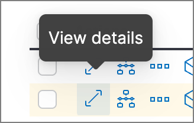
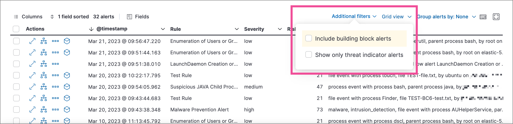
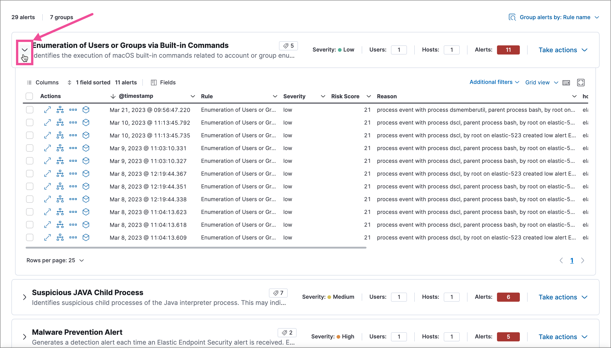
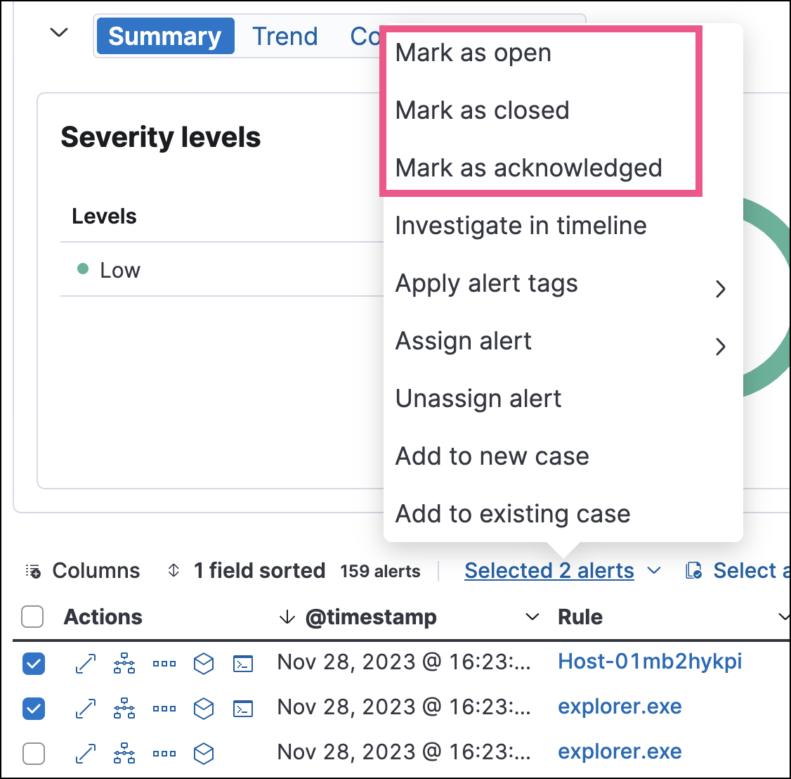
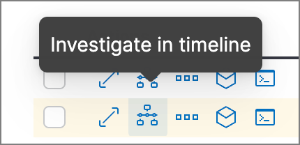
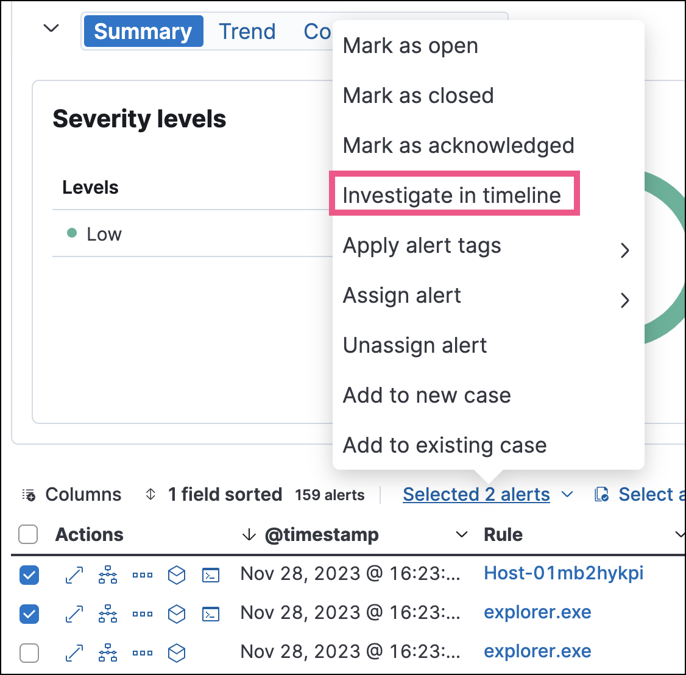

Manage detection alertsedit
The Alerts page displays all detection alerts. From the Alerts page, you can filter alerts, view alerting trends, change the status of alerts, add alerts to cases, and start investigating and analyzing alerts.

View and filter detection alertsedit
The Alerts page offers various ways for you to organize and triage detection alerts as you investigate suspicious events. You can:
-
View an alert’s details. Click the View details button from the Alerts table to open the alert details flyout. Learn more at View detection alert details.
 - View the rule that created an alert. Click a name in the Rule column to open the rule’s details page.
-
Filter for a specific rule in the KQL bar (for example,
kibana.alert.rule.name :"SSH (Secure Shell) from the Internet"). KQL autocomplete is available for.alerts-security.alerts-*indices. - Use the date and time filter to define a specific time range. By default, this filter is set to search the last 24 hours.
- Use the drop-down filter controls to filter alerts by up to four fields. By default, you can filter alerts by Status, Severity, User, and Host, and you can edit the controls to use other fields.
- Visualize and group alerts by specific fields in the visualization section. Use the buttons on the left to select a view type (Summary, Trend, Counts, or Treemap), and use the menus on the right to select the ECS fields used for grouping alerts. Refer to Visualize detection alerts for more on each view type.
-
Hover over a value to display available inline actions, such as Filter In, Filter Out, and Add to timeline. Click the expand icon for more options, including Show top x and Copy to Clipboard. The available options vary based on the type of data.

-
Filter alert results to include building block alerts or to only show alerts from indicator match rules by selecting the Additional filters drop-down. By default, building block alerts are excluded from the Overview and Alerts pages. You can choose to include building block alerts on the Alerts page, which expands the number of alerts.
When updating alert results to include building block alerts, the Security app searches the
.alerts-security.alerts-<Kibana space>index for thekibana.alert.building_block_typefield. When looking for alerts created from indicator match rules, the app searches the same index forkibana.alert.rule.type:'threat_match'. - View detection alerts generated by a specific rule. Go to Rules → Detection rules (SIEM), then select a rule name in the table. The rule details page displays a comprehensive view of the rule’s settings, and the Alerts table under the Trend histogram displays the alerts associated with the rule, including alerts from any previous or deleted revision of that rule.
Edit drop-down filter controlsedit
By default, the drop-down controls on the Alerts page filter alerts by Status, Severity, User, and Host. You can edit them to filter by different fields, as well as remove, add, and reorder them if you prefer a different order.
- You can have a maximum of four controls on the Alerts page.
- You can’t remove the Status control.
- If you make any changes to the controls, you must save the pending changes for them to persist.
- Click the three-dot icon next to the controls (), then select Edit Controls.
-
Do any of the following:
- To reorder controls, click and drag a control by its handle ().
- To remove a control, hover over it and select Remove control ().
- To edit a control, hover over it and select Edit control ().
- To add a new control, click Add Controls (). If you already have four controls, you must first remove one to make room for the new one.
-
If you’re editing or adding a control, do the following in the configuration flyout that opens:
- In the Field list, select the field for the filter. The Control type is automatically applied to the field you selected.
- Enter a Label to identify the control.
- Click Save and close.
- Click Save pending changes ().
Group alertsedit
You can group alerts by rule name, user name, host name, source IP address, or any other field. Select Group alerts by, then select an option or Custom field to specify a different field.
Select up to three fields for grouping alerts. The groups will nest in the order you selected them, and the nesting order is displayed above the table next to Group alerts by.
Each group displays information such as the alerts' severity and how many users, hosts, and alerts are in the group. The information displayed varies depending on the selected fields.
To interact with grouped alerts:
- Select the Take actions menu to perform a bulk action on all alerts in a group, such as changing their status.
-
Click a group’s name or the expand icon () to display alerts within that group. You can filter and customize this view like any other alerts table.

Customize the Alerts tableedit
Use the toolbar buttons in the upper-left of the Alerts table to customize the columns you want displayed:
- Columns: Reorder the columns.
- x fields sorted: Sort the table by one or more columns.
- Fields: Select the fields to display in the table. You can also add runtime fields to detection alerts and display them in the Alerts table.
Click the Full screen button in the upper-right to view the table in full-screen mode.

Use the view options drop-down in the upper-right of the Alerts table to control how alerts are displayed:
- Grid view: Displays alerts in a traditional table view with columns for each field
- Event rendered view: Display alerts in a descriptive event flow that includes relevant details and context about the event.
When using grid view, you can view alert-rendered reason statements and event renderings for specific alerts by clicking the expand icon in the Reason column. Some events do not have event renderings.
Take actions on an alertedit
From the Alerts table or the alert details flyout, you can:
- Add detection alerts to cases
- Change an alert’s status
- Add a rule exception from an alert
- Apply and filter alert tags
- Assign users to alerts
- Filter assigned alerts
- Add an endpoint exception from an alert
- Isolate an alert’s host
- Perform response actions on an alert’s host (Alert details flyout only)
- Run Osquery against an alert
- View alerts in Timeline
- Visually analyze an alert’s process relationships
Change an alert’s statusedit
You can set an alert’s status to indicate whether it needs to be investigated (Open), is under active investigation (Acknowledged), or has been resolved (Closed). By default, the Alerts page displays open alerts. To filter alerts that are Acknowledged or Closed, use the Status drop-down filter at the top of the Alerts page.
To change an alert’s status, do one of the following:
- In the Alerts table, click More actions (…) in the alert’s row, then select a status.
-
In the Alerts table, select the alerts you want to change, click Selected x alerts at the upper-left above the table, and then select a status.
 - [beta] This functionality is in beta and is subject to change. The design and code is less mature than official GA features and is being provided as-is with no warranties. Beta features are not subject to the support SLA of official GA features. To bulk-change the status of grouped alerts, select the Take actions menu for the group, then select a status.
- In an alert’s details flyout, click Take action and select a status.
Apply and filter alert tagsedit
Use alert tags to organize related alerts into categories that you can filter and group. For example, use the False Positive alert tag to label a group of alerts as false positives. Then, search for them by entering the kibana.alert.workflow_tags : "False Positive" query into the KQL bar. Alternatively, use the Alert table’s drop-down filters to filter for tagged alerts.
You can manage alert tag options by updating the securitySolution:alertTags advanced setting. Refer to Manage alert tag options for more information.
To display alert tags in the Alerts table, click Fields and add the kibana.alert.workflow_tags field.
To apply or remove alert tags on individual alerts, do one of the following:
- In the Alerts table, click More actions (…) in an alert’s row, then click Apply alert tags. Select or unselect tags, then click Apply tags.
- In an alert’s details flyout, click Take action → Apply alert tags. Select or unselect tags, then click Apply tags.
To apply or remove alert tags on multiple alerts, select the alerts you want to change, then click Selected x alerts at the upper-left above the table. Click Apply alert tags, select or unselect tags, then click Apply tags.

Assign users to alertsedit
Assign users to alerts that you want them to investigate, and manage alert assignees throughout an alert’s lifecycle.
Users are not notified when they’ve been assigned to, or unassigned from, alerts.
| Action | Instructions |
|---|---|
Assign users to an alert |
Choose one of the following:
|
Unassign all users from an alert |
Choose one of the following:
|
Assign users to multiple alerts |
From the Alerts table, select the alerts you want to change. Click Selected x alerts at the upper-left above the table, then click Assign alert. Select users, then click Apply. Users assigned to some of the selected alerts will be displayed as unassigned in the selection list. Selecting said users will assign them to all alerts they haven’t been assigned to yet. |
Unassign users from multiple alerts |
From the Alerts table, select the alerts you want to change and click Selected x alerts at the upper-left above the table. Click Unassign alert to remove users from the alert. |
Show users that have been assigned to alerts by adding the Assignees column to the Alerts table (Fields → kibana.alert.workflow_assignee_ids). Up to four assigned users can appear in the Assignees column. If an alert is assigned to five or more users, a number appears instead.
Assigned users are automatically displayed in the alert details flyout. Up to two assigned users can be shown in the flyout. If an alert is assigned to three or more users, a numbered badge displays instead.
Filter assigned alertsedit
Click the Assignees filter above the Alerts table, then select the users you want to filter by.
Add a rule exception from an alertedit
You can add exceptions to the rule that generated an alert directly from the Alerts table. Exceptions prevent a rule from generating alerts even when its criteria are met.
To add an exception, click the More actions menu (…) in the Alerts table, then select Add exception. Alternatively, select Take action → Add rule exception in the alert details flyout.
For information about exceptions and how to use them, refer to Add and manage exceptions.
View alerts in Timelineedit
-
To view a single alert in Timeline, click the Investigate in timeline button in the Alerts table. Alternatively, select Take action → Investigate in timeline in the alert details flyout.
 -
To view multiple alerts in Timeline (up to 2,000), select the checkboxes next to the alerts, then click Selected x alerts → Investigate in timeline.

When you send an alert generated by a threshold rule to Timeline, all matching events are listed in the Timeline, even ones that did not reach the threshold value. For example, if you have an alert generated by a threshold rule that detects 10 failed login attempts, when you send that alert to Timeline, all failed login attempts detected by the rule are listed.
Suppose the rule that generated the alert uses a Timeline template. In this case, when you investigate the alert in Timeline, the dropzone query values defined in the template are replaced with their corresponding alert values.
Example
This Timeline template uses the host.name: "{host.name}" dropzone filter in
the rule. When alerts generated by the rule are investigated in Timeline, the
{host.name} value is replaced with the alert’s host.name value. If the
alerts’s host.name value is Windows-ArsenalFC, the Timeline dropzone query
is host.name: "Windows-ArsenalFC".
Refer to Investigate events in Timeline for information on creating Timelines and Timeline templates. For information on how to add Timeline templates to rules, refer to Create a detection rule.